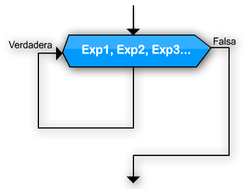

|
Con WHILE, puede armarse cualquier tipo de ciclo, pero a veces es útil utilizar otros ciclos que simplifican la escritura de un programa. FOR es un ciclo exacto, lo que nos permite ejecutar las instrucciones del ciclo un número de veces predeterminado.
Para <variable> <- <inicial> Hasta <final> ( Con Paso <paso> ) Hacer |
|  |